I The cosmos
Every star system within ten light years
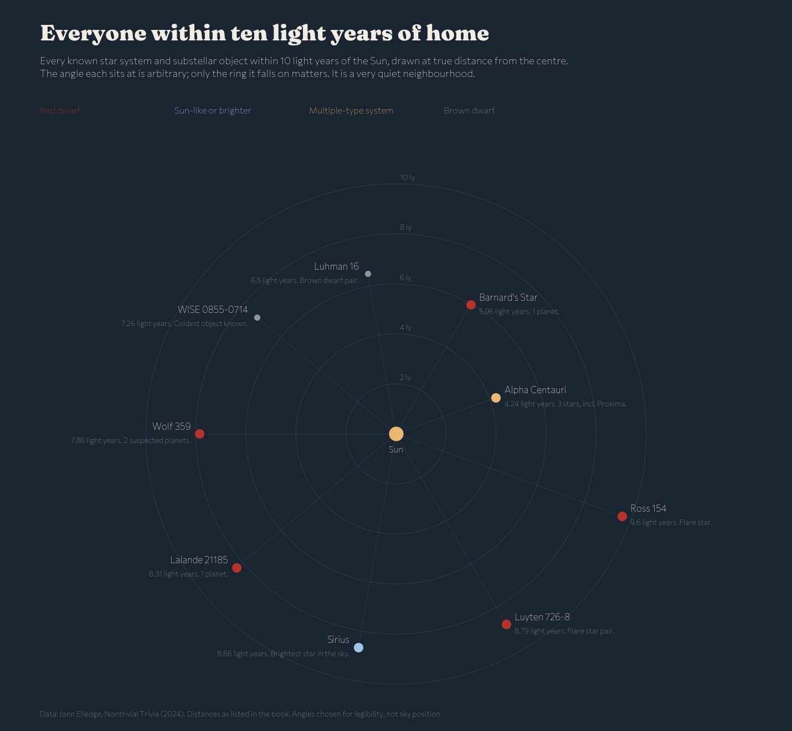
Nine systems lie within ten light years of the Sun. The nearest, Alpha Centauri, is 4.24 light years away and has three stars. Six of the nine are red dwarfs, two are brown dwarf pairs, and one, Sirius, is a bright A-type star with a white dwarf companion. Nothing sits inside four light years.
The eight planets: distance, orbital period, size and moons
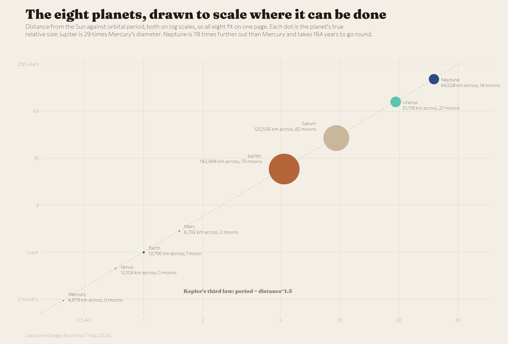
Mercury is 0.39 AU from the Sun and orbits in 88 days; Neptune is 30 AU out and takes 164 years. Jupiter is 142,984 km across with 79 moons; Saturn 120,536 km with 82. Mercury and Venus have none. On log axes the eight sit on the line period = distance^1.5.
Thirteen animal spaceflights, 1947 to 1973
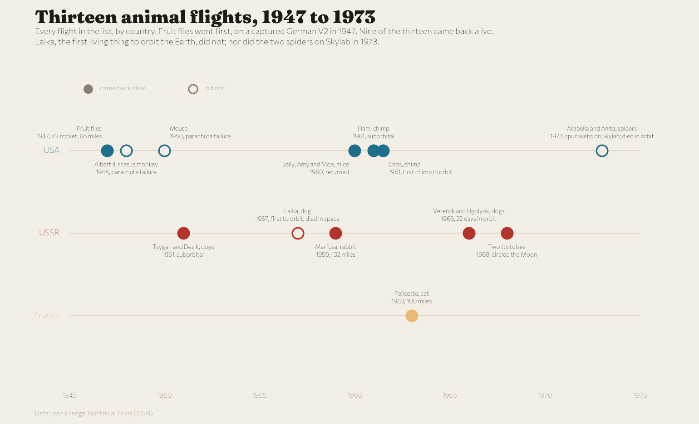
Fruit flies flew first, on a captured V2 in 1947, and came back. Albert II, a rhesus monkey, died in 1948 when his parachute failed. Laika orbited Earth in 1957 and died in space. Two tortoises circled the Moon on Zond 5 in 1968 and returned. Nine of the thirteen flights brought the animals back alive; the US flew seven, the USSR five, France one.
II The human planet
The largest city on Earth, 4000 BCE to 2025, on a true time axis
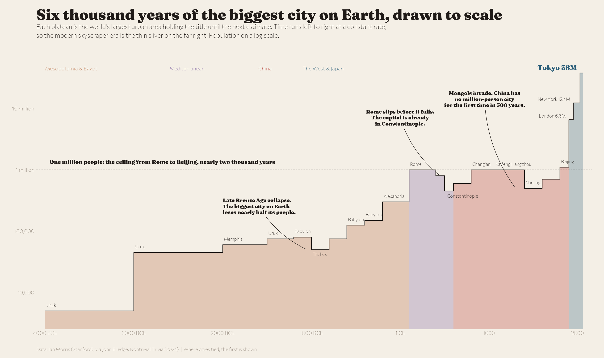
Uruk had 5,000 people in 4000 BCE and 45,000 a thousand years later. Rome reached a million around 100 CE. Chang'an, Kaifeng, Hangzhou and Beijing each topped out at about a million between 800 and 1800. London had 6.6 million in 1900, New York 12.4 million in 1950, Tokyo 38 million in 2025.
The same series as a line, log scale, with the collapses marked
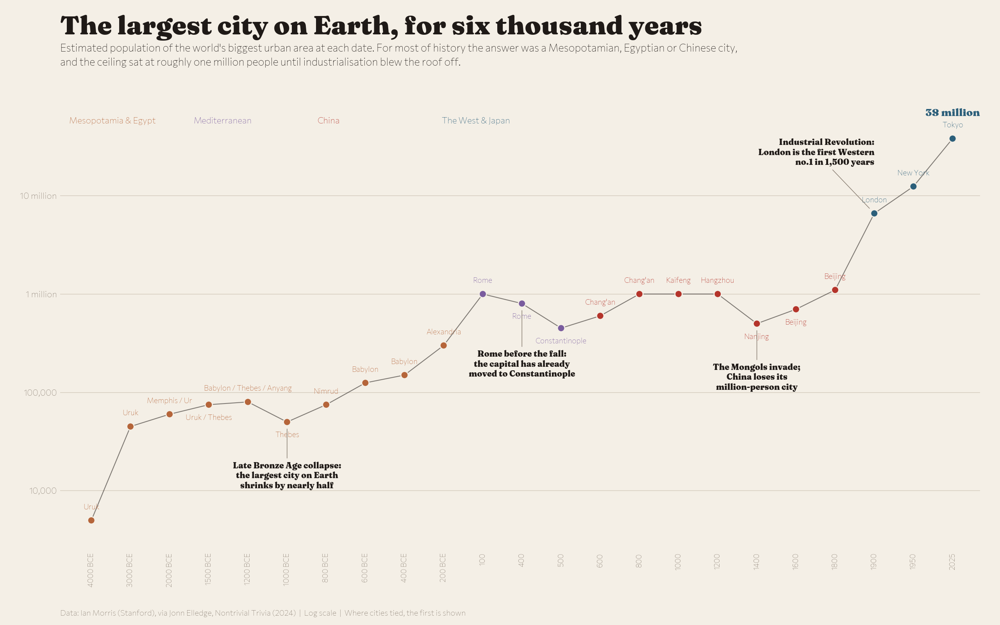
The largest city shrank from 80,000 to 50,000 around 1200 BCE, from a million to 800,000 by 400 CE, and from a million to 500,000 between 1200 and 1400.
The same series on a linear scale
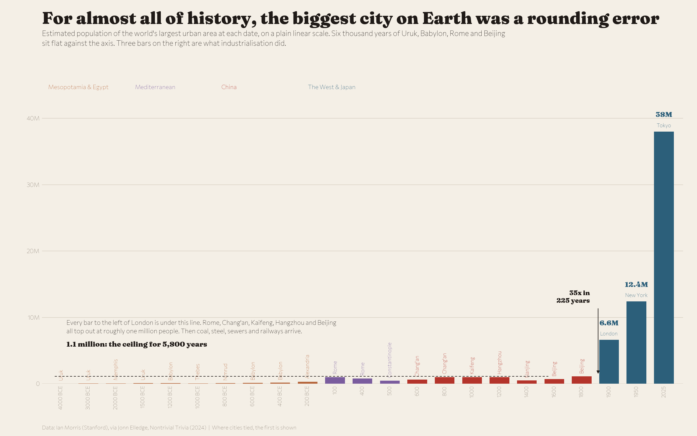
Every city before 1900 is under 1.1 million. London in 1900 is six times Beijing in 1800; Tokyo in 2025 is 35 times Beijing in 1800.
III Measurement
The current year in ten calendars, June 2026
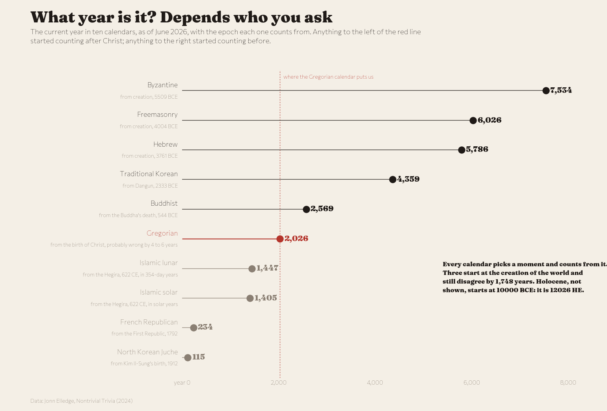
Byzantine 7534, Freemasonry 6026, Hebrew 5786, Korean 4359, Buddhist 2569, Gregorian 2026, Islamic lunar 1447, Islamic solar 1405, French Republican 234, Juche 115. Three of the ten count from a date of creation and disagree by 1,748 years. The Holocene calendar, which starts at 10000 BCE, puts the year at 12026.
IV Histories and politics
The tallest building on Earth since 1300
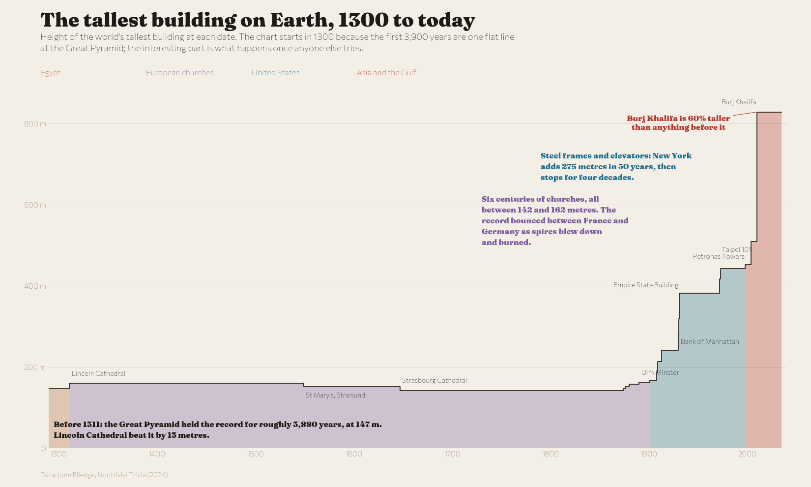
The Great Pyramid, 147 metres, held the record from about 2570 BCE until 1311. Eight European churches held it from 1311 to 1901, all between 142 and 162 metres. Nine US buildings held it from 1901 to 1998, rising from 167 to 442 metres. The Burj Khalifa, 828 metres, has held it since 2010.
How long each record-holder lasted
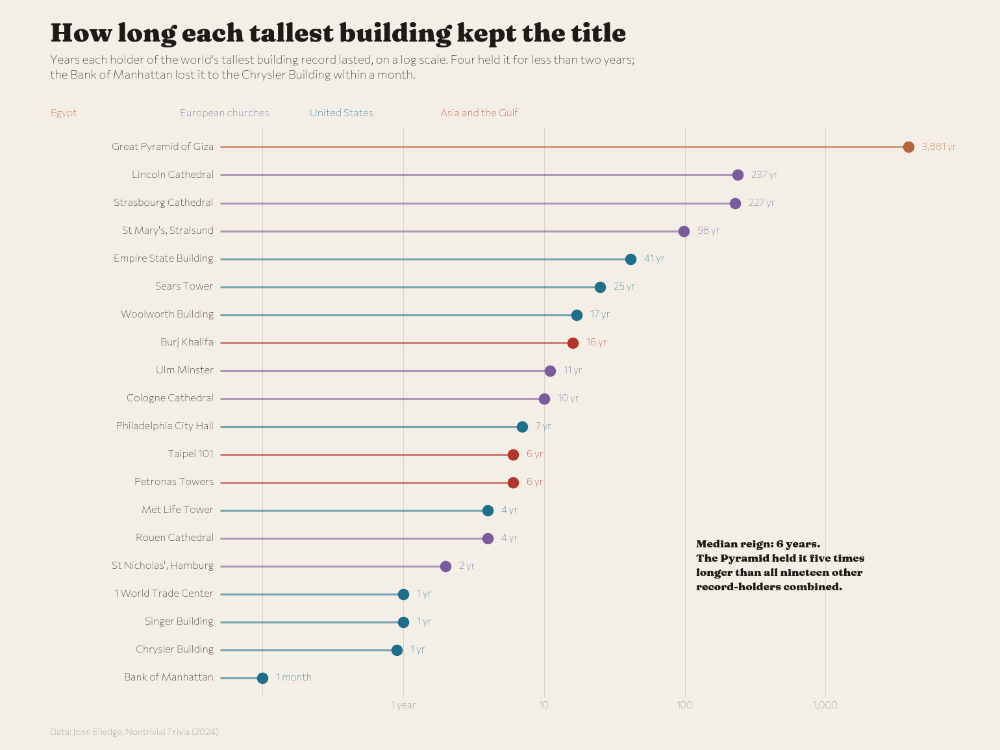
The median reign is six years. The Pyramid's 3,881 years is five times the other nineteen combined. The Bank of Manhattan lost the record to the Chrysler Building within a month in 1930.
Record-holders by country
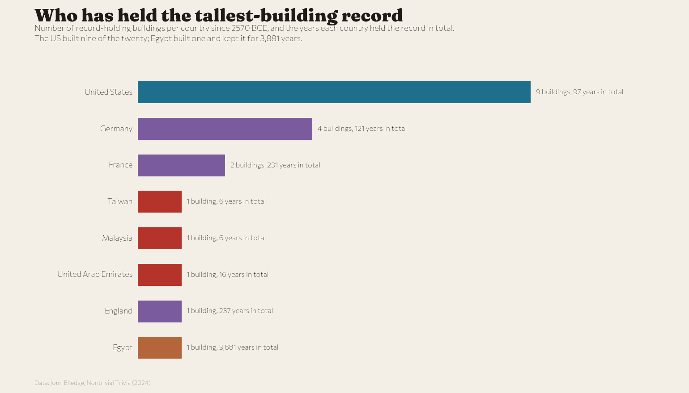
United States 9 buildings, 97 years. Germany 4, 121 years. France 2, 231 years. England, Egypt, Malaysia, Taiwan and the UAE one each.
V The natural world
Magnitude against death toll for the ten largest recorded earthquakes
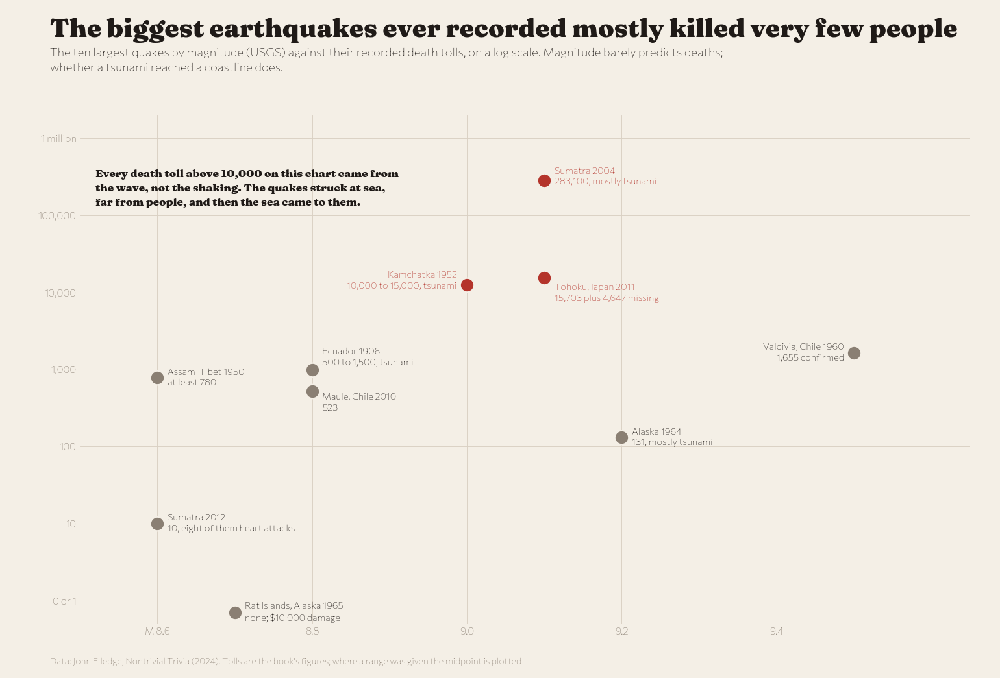
Valdivia 1960, M9.5, killed 1,655. Rat Islands 1965, M8.7, killed nobody. Sumatra 2012, M8.6, killed ten. The three quakes above 10,000 deaths, Sumatra 2004, Tohoku 2011 and Kamchatka 1952, killed mostly by tsunami.
When the ten happened
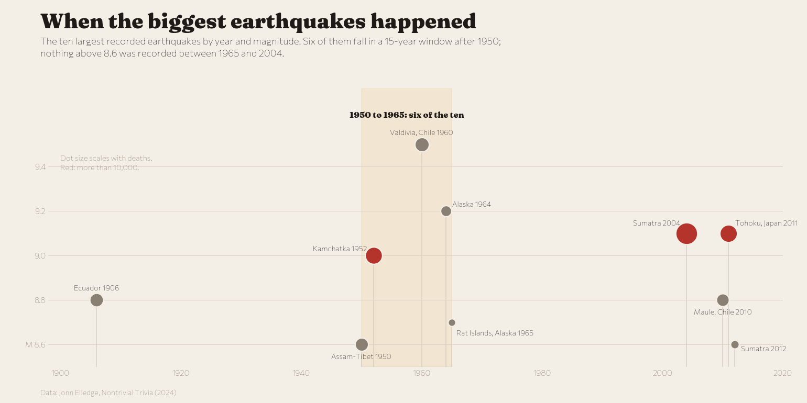
Six of the ten occurred between 1950 and 1965. Nothing above M8.6 was recorded between 1965 and 2004.
Rank by magnitude against rank by deaths
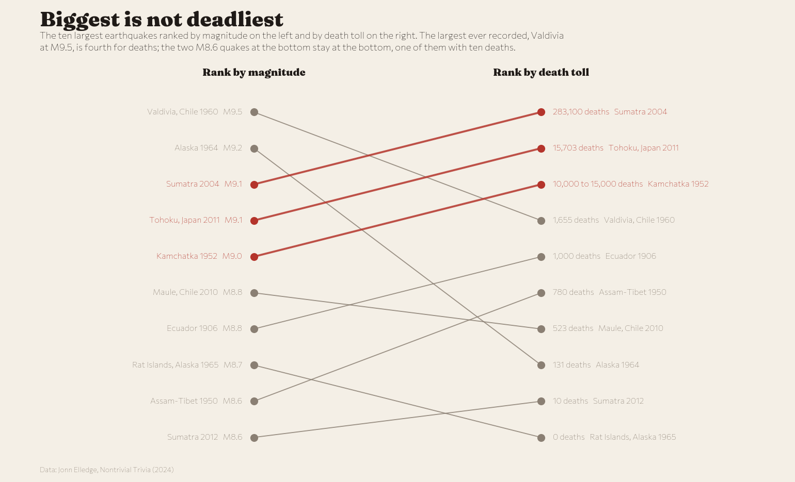
The largest quake ranks fourth for deaths. The deadliest, Sumatra 2004 at 283,100, ranks third for magnitude.
VI Communication
Native speakers to total speakers, the 15 most spoken languages
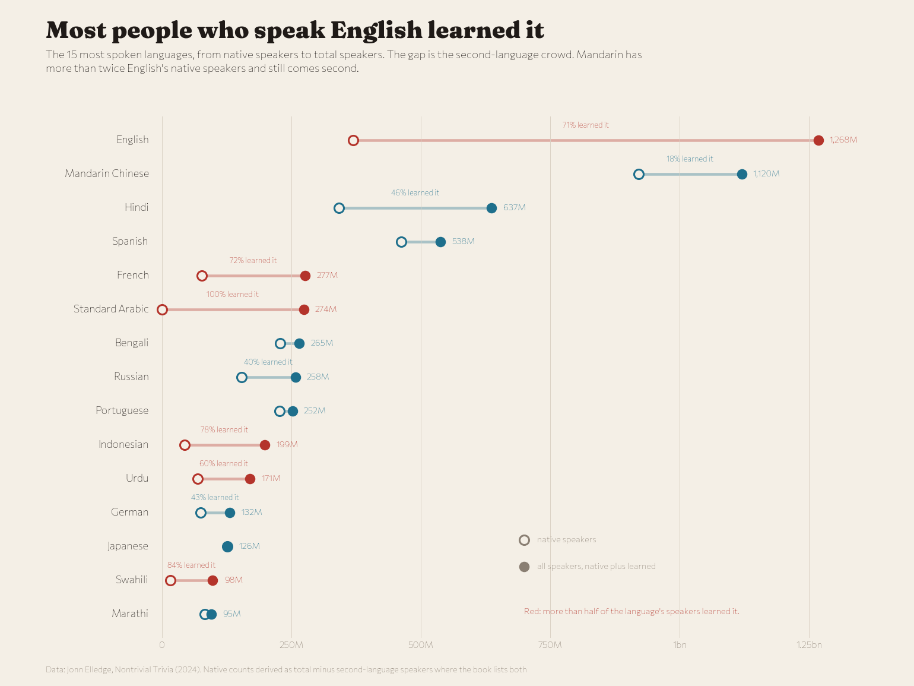
English has 370 million native speakers and 1,268 million in total. Mandarin has 922 million native and 1,120 million in total. Standard Arabic has 274 million speakers and no native speakers.
Learner share of each language
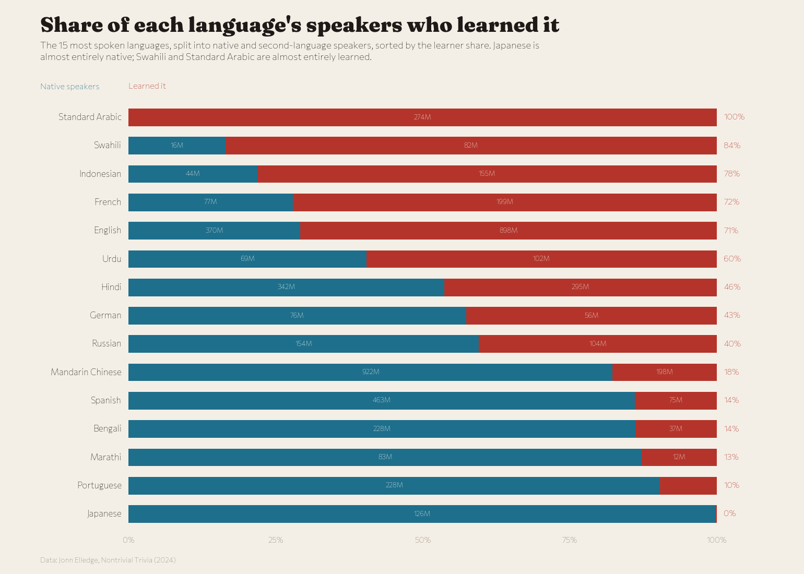
Standard Arabic 100 percent learned, Swahili 84, Indonesian 78, French 72, English 71. Japanese 0.2 percent, Portuguese 10, Marathi 13.
Rank by native speakers against rank by all speakers
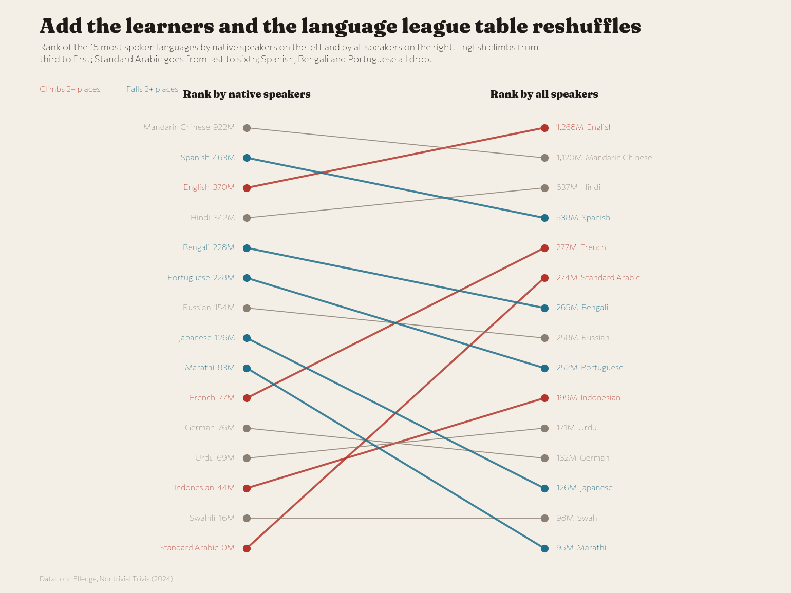
English moves from third to first, Standard Arabic from fifteenth to sixth, French from fourteenth to fifth. Spanish drops from second to fourth, Bengali from fifth to seventh, Portuguese from sixth to ninth.
VII Leisure
Top ten films by gross, as reported and in 2023 dollars
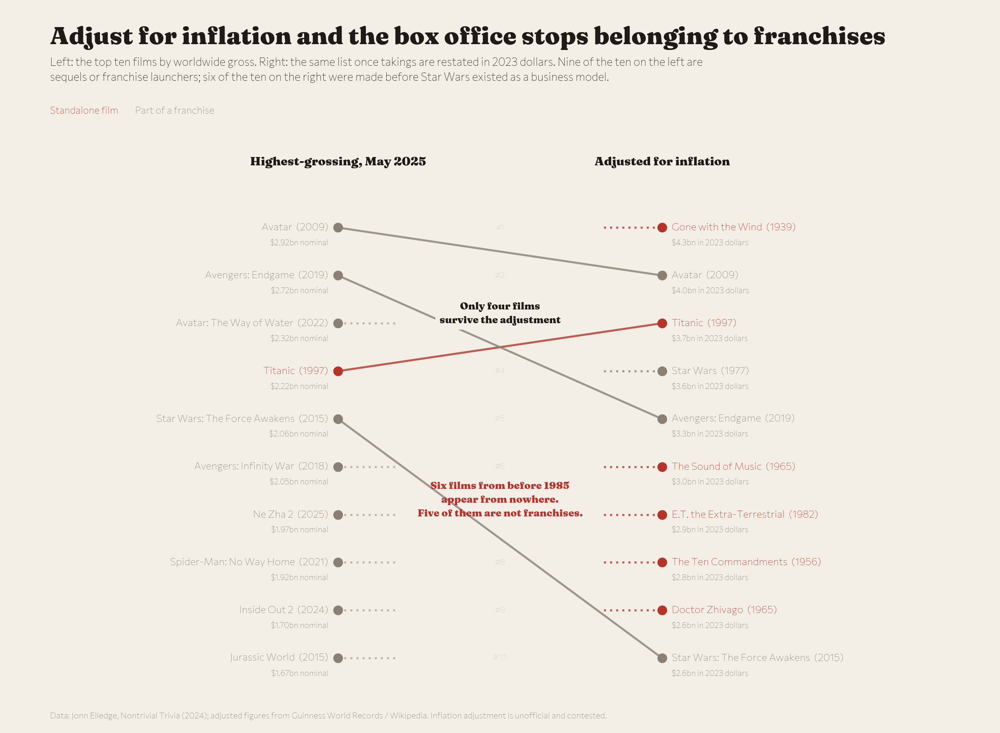
Four films are on both lists: Avatar, Titanic, Avengers: Endgame and The Force Awakens. Gone with the Wind (1939) tops the adjusted list at $4.3 billion. Nine of the ten on the nominal list are sequels or franchise launchers; six of the ten on the adjusted list were released before 1985.
The four films on both lists, before and after adjustment
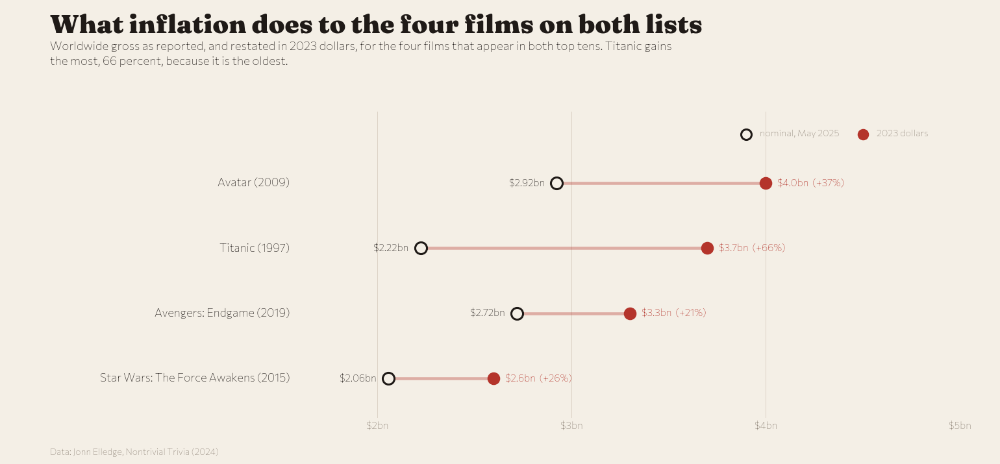
Avatar $2.92bn to $4.0bn, Titanic $2.22bn to $3.7bn, Endgame $2.72bn to $3.3bn, The Force Awakens $2.06bn to $2.6bn.
US share of worldwide gross, top ten films
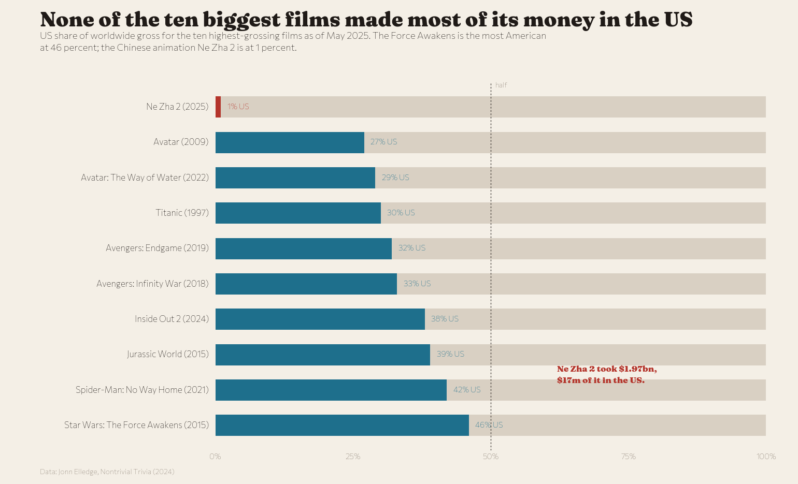
The Force Awakens 46 percent, Spider-Man: No Way Home 42, Jurassic World 39, Inside Out 2 38. Avatar 27. Ne Zha 2 took $1,970 million worldwide and $17 million in the US, 1 percent.
VIII Oddities
Tallest free-standing flagpole, 2001 to 2026
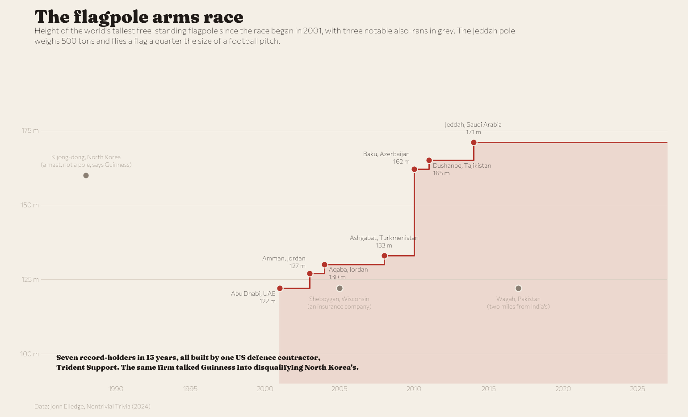
Abu Dhabi 122 m in 2001, Amman 127 m in 2003, Aqaba 130 m in 2004, Ashgabat 133 m in 2008, Baku 162 m in 2010, Dushanbe 165 m in 2011, Jeddah 171 m in 2014. All seven were built by Trident Support. North Korea's 160 m Kijong-dong structure, 1988, is classed by Guinness as a mast. The tallest in the US is 122 m, in Sheboygan, Wisconsin.
IX The end
Annual probability: car crash against extinction
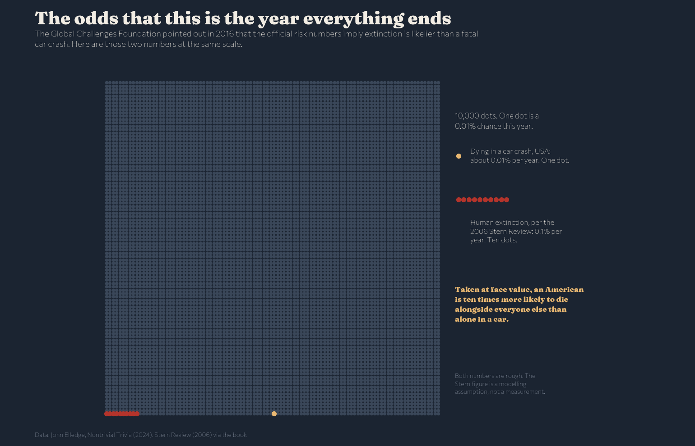
An American's chance of dying in a car crash in a given year is about 0.01 percent. The 2006 Stern Review put the annual chance of human extinction at 0.1 percent. On a grid of 10,000 dots, that is one dot against ten.